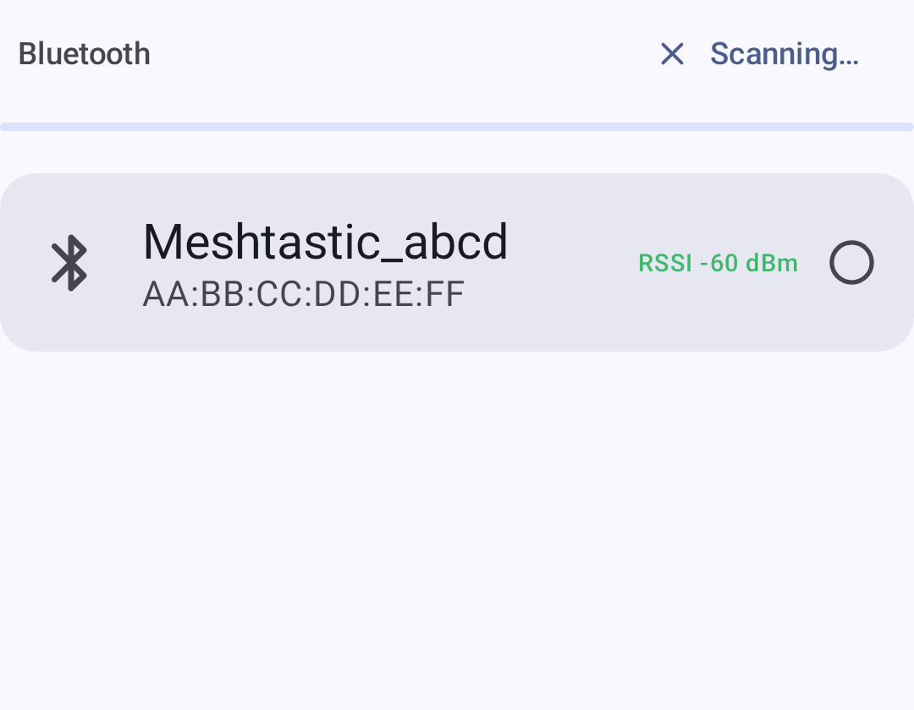
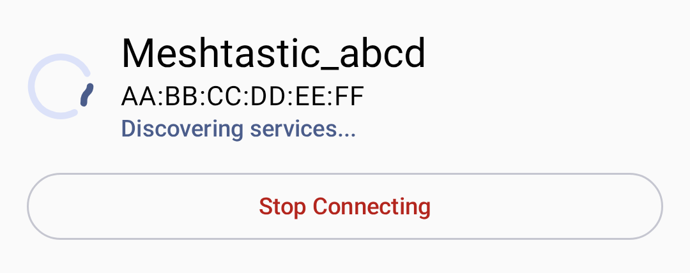

Meshtastic supports multiple transport methods to communicate between your phone/desktop and a radio node.
Bluetooth Low Energy is the default and most common connection method on Android.

Use the transport selector — a segmented button row below the connection card — to switch between the Bluetooth, Network, and USB transports (one is active at a time):
💡 Tip: If your device doesn’t appear, check that Bluetooth and Location permissions are granted, and that the radio is not already connected to another device.
| Icon | State | Description |
|---|---|---|
| 🟢 | Connecté | Active radio link established |
| 🟡 | Connexion en cours | Handshake in progress |
| 🔴 | Déconnecté | No active connection |
| ⚪ | Not configured | Aucun appareil sélectionné |
When connecting, a status indicator shows the current connection state:

If no devices are found, the app shows an empty state with instructions:

USB connections provide a wired alternative, useful for desktop or when Bluetooth is unavailable.
⚠️ Note: USB connections require OTG support on Android devices.
Some Meshtastic radios support WiFi/Ethernet connectivity, allowing TCP-based connections over your local network. Get the radio onto your network first — using the radio’s own WiFi settings (via the firmware web interface or another connection) — then connect to it from the app.
_meshtastic._tcp). Discovered devices appear in the list; tap one to connect.4403).💡 Tip: Network discovery uses mDNS, which only works when both devices are on the same subnet. On Android 17+ the app needs the local-network permission for scanning; if discovery finds nothing, add the device manually by IP.
The app reconnects to the last selected device on startup. You can switch transports from the Connect screen at any time.
To disconnect, tap the disconnect button on the Connect screen:

On Desktop (Linux/macOS/Windows), the app supports:
See Desktop App for platform-specific details and keyboard shortcuts.